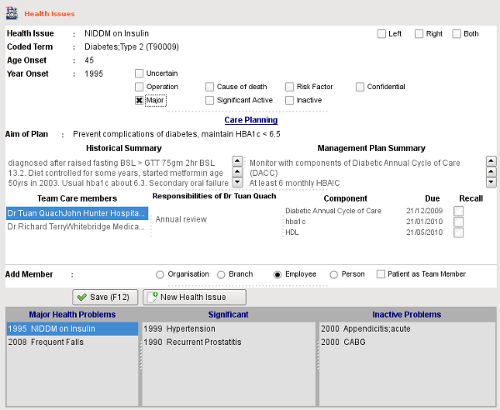

|  |
- Traditional medical diagnoses - for example hypertension, diabetes, ischaemic heart disease, rheumatoid arthritis, depression
- Social diagnoses - for example Poor coping skills, socially disadvantaged
- Undefined problems - for example Possible early memory loss or Increasing Infirmity
- A Patient Concern eg Worried about aging parents, i.e this may not be a medical issues but of great concern to the patient.
- After all the data has been entered, clicking on the Save (F12) button will add the new problem to the list below the editing area.
|